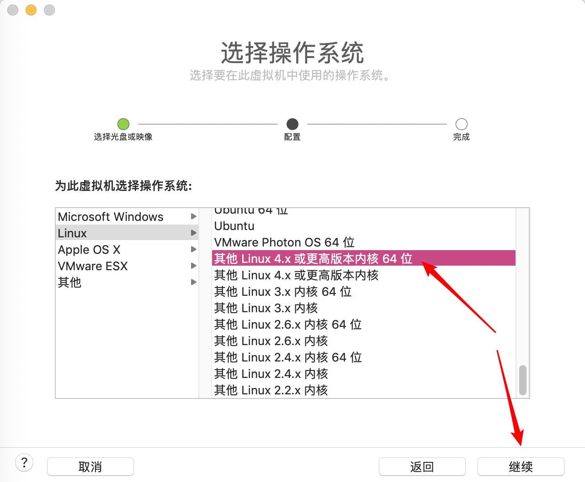
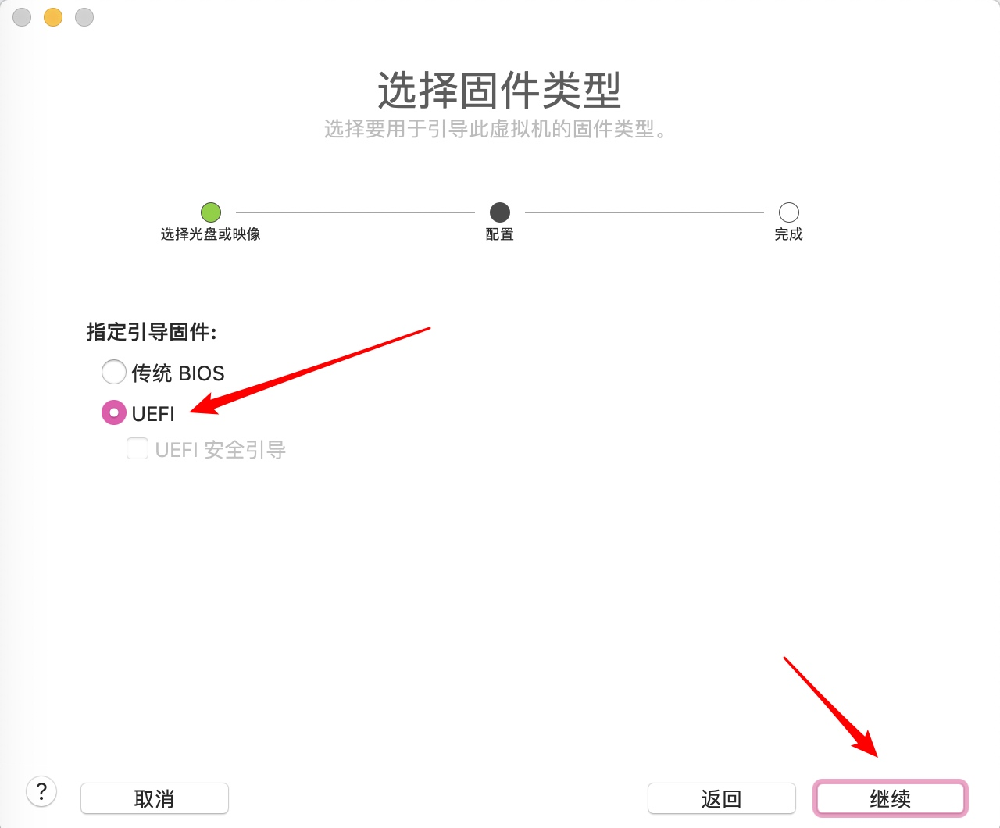
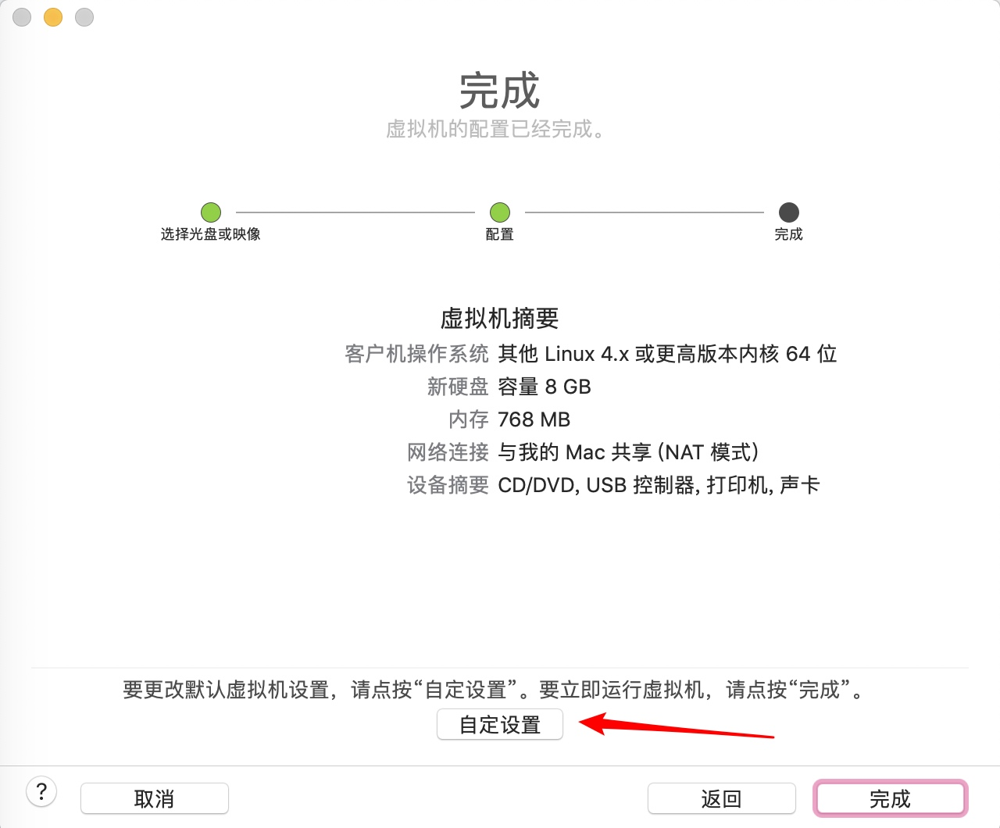
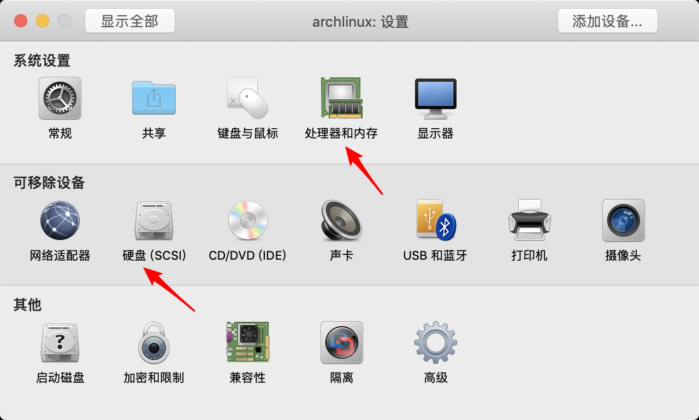
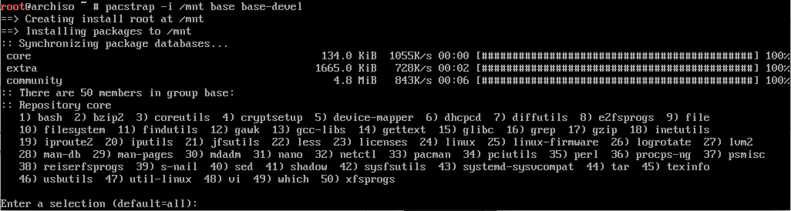
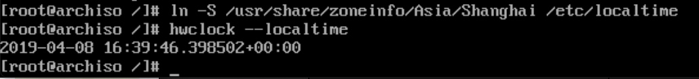

虚拟机准备









进入系统后首先检查系统是否联通

分区
进入 parted 命令进行分区操作

建立 gpt 分区表

建立 ESP 分区，用于挂载 efi 分区（uefi 模式必须要有 efi 分区）

创建交换分区，范围从550M 到8G

剩下的创建为主分区

设定ESP分区标志：boot

使用 p 查看分区情况，然后使用 q 退出 parted

查看硬盘分区状态，图中可以看到 sda1、sda2、sda3 分别为我们刚才创建的三个分区。

现在对三个分区分别进行格式化操作

挂载主分区/dev/sda3，创建 efi 目录并将 efi 分区 /dev/sda1 挂载到 efi 目录下，最后激活交换分区 /dev/sda2。

至此分区结束，下面开始系统安装过程
安装系统
更改软件源为中国源
首先打开源文件

ctrl+w 然后输入 china 搜索中国源

再次按 ctrl+w 并输入 china 可以搜索其他中国源，这里推荐使用 ustc 或163。
找到指定的源之后，将光标调整到行首，然后按 ctrl+k 执行剪贴操作，然后移动光标到首行，按 ctrl+u 执行粘贴操作。使用上述方法将 ustc 和163源放在最上面，这样可以提高软件下载速度。

接下来按 ctrl+o 并回车保存修改，然后按 ctrl+x 退出编辑器。
输入head -n 15 文件名显示指定文件的前15行内容。来查看是否修改成功。

安装基础包，这里会弹出几个提示，一路按回车确认即可。 
生成 fstab 文件
genfstab -U /mnt >> /mnt/etc/fstab

进入 chroot 环境即进入到新安装的系统。然后：安装 gurb 启动程序。
arch-chroot /mnt


把 grub 引导管理器安装到 efi 分区里
grub-install --target=x86_64-efi --efi-directory=/boot/efi --bootloader-id=arch-grub --recheck

修改主机名为 lonelyor，使用nano /etc/hostname打开文件然后输入 lonelyor，再按 ctrl+o 保存文件，然后 ctrl+x 退出编辑器即可。查看修改是否成功。

修改 hosts 文件

设置 root 密码

添加普通用户并为该用户设置密码

设置时区与编码，编辑 /etc/locale.gen 文件，去掉en_US.UTF-8,zh_CN.UTF-8,zh_CN.GBK前面的#符号。然后保存并退出编辑器。
输入 locale-gen 重建编码表

设置系统时区，然后同步本地时钟 ln -S /usr/share/zoneinfo/Asia/Shanghai /etc/localtime hwclock --localtime 
基本系统安装完毕，现在输入 exit 退出 chroot，然后输入 reboot 重启系统。
 至此，完成了基本系统的安装。
至此，完成了基本系统的安装。
配置系统
进入系统后输入刚才设置的账号和密码，即可登录系统，按照之前的设置，我拥有两个账号，一个是 root，另一个是 lonelyor。
现在依次点击：虚拟机、快照、拍摄快照，来保存目前的进度，拍摄快照非常重要，在进行重要操作，如更新系统，对系统文件进行设置之前，一定要记得拍摄快照。并养成定期拍摄快照的习惯。
重启后使用 ping 检查网络是否畅通。

这里发现网络不通，可能是 dhcp 的问题，设置 dhcp。由于 /etc 下的文件是系统文件，修改时需要 root 权限，因此这里输入 sudo 来临时获取 root 权限。

结果发现提示我们的账户不在 sudoers 中，这里需要单独设置，具体方法我们后续再介绍，这里我们使用 su 直接提升权限至 root。

然后nano /etc/rc.conf再次修改文件，修改后查看是否修改成功。

接着输入dhcpcd启动 dhcp 服务。

再次使用 ping 检查网络是否畅通

配置 archlinuxcn 源并安装 yaourt，就可以使用 aur 中的超量软件了。
修改`/etc/pacman.conf`文件
在文件后添加如下语句
[archlinuxcn]
SigLevel = Optional TrustedOnly
Server = https://mirrors.ustc.edu.cn/archlinuxcn/$arch

更新软件并导入 key
导入GPG Key
sudo pacman -Syy && sudo pacman -S archlinuxcn-keyring
 安装 yaourt
安装 yaourt
pacman -S yaourt
添加sudo
pacman -S sudo
打开 /etc/sudoers 文件，找到 root ALL=(ALL) ALL 并依葫芦画瓢添加 lonelyor ALL=(ALL) ALL，然后取消%wheel ALL=(ALL) NOPASSWD: ALL前的注释。

修改 watchdog did not stop，降低关键等待时间。
编辑/etc/systemd/system.conf文件：
将
DefaultTimeoutStopSec=90s
更改为
DefaultTimeoutStopSec=9s
将终止服务的等待时间更改为9秒，从而解决关机缓慢的问题。
我顺手将其他时间长的都改短了。

安装图形界面，输入下列命令一路回车即可。
pacman -S xorg xorg-server xorg-xinit
pacman -S plasma
pacman -S sddm
systemctl enable sddm
安装触摸板驱动
pacman -S xf86-input-synaptics
安装字体
pacman -S ttf-dejavu wqy-zenhei ttf-inconsolata
安装小工具合集
pacman -S konsole net-tools p7zip wget cmake curl
安装搜狗输入法和图形化配置工具
sudo pacman -S fcitx-sogoupinyin
sudo pacman -S fcitx-im
sudo pacman -S fcitx-configtool
需要修改配置文件/home/lonelyor/.xprofile
添加如下语句
export GTK_IM_MODULE=fcitx
export QT_IM_MODULE=fcitx
export XMODIFIERS="@im=fcitx"
安装 networkmanager 开机启动网络管理程序，你没看错，这两个字母确实是大写。
pacman -S networkmanager
systemctl enable NetworkManager.service
安装 ntfs 文件系统识别软件，这样linux 就能识别 windows 使用的 ntfs 文件系统了。
pacman -S ntfs-3g dosfstools
安装chrome
yaourt -S google-chrome
文件管理器
pacman -S dolphin
安装看图工具
pacman -S gpicview
安装host修改工具
yaourt -S switchhosts-bin
由于 yaourt 不能使用 root 权限进行软件安装，因为我们要切换到 lonelyor 用户。使用命令su lonelyor即可。
 然后一路回车即可安装软件。
然后一路回车即可安装软件。
安装vscode编辑器
yaourt -S visual-studio-code-bin
命令补全工具
pacman -S bash-completion
安装 vmtools
pacman -S open-vm-tools
pacman -S linux-headers
yay -S open-vm-tools-dkms gtkmm gtkmm3（这里还要安装 xf86xxx 之类的东西才能调节分辨率）
systemctl enable vmware-vmblock-fuse
systemctl enable vmtoolsd
编辑 ~/.xinitrc或~/.xprofile 在文件开头添加以下内容，来设置中文显示
export LANG=zh_CN.UTF-8
export LANGUAGE=zh_CN:en_US
export LC_CTYPE=en_US.UTF-8
若要图形界面用户设置全面的中文显示
添加如下内容到文件~/.xprofile文件中
export LC_ALL="zh_CN.UTF-8"
全部安全配置完成，输入reboot重启即可。